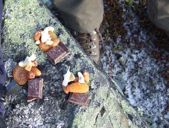

Etappe 4: Abisko/Narvik - Fauske (Sulitjelma)
Lørdag 25. Oktober 2008 av: Montarou

Det handler om kontraster. En uavbrutt rekke av kontraster. De gir seg oftest til kjenne gjennom behov/tilfredsstillelse eller kanskje rettere sagt ubehag/behag. Det er slik vi skjelner mellom ting. Det fortoner seg ofte som den evige kampen mellom sult/mett, varm/kald, sliten/opplagt, finvær/dritvær, tung sekk/lett sekk, nok mat/ikke nok mat eller nok parafin/ikke nok parafin. Helt deilig konkrete ting, men desto mer viktige for opprettholdelsen av livet og optimalisering av den komforten som er tilgjengelig på verdens største lekep(a)lass. Men dette er hverdagen og slik har det vært i 60 døgn (nesten 100 hvis man teller med Finland!). Det er vannvittig deilig.
Jeg ser på kartet og ser at vi snart er halvveis! Ikke dårlig tenker jeg. Det er langt. Men det er også langt igjen. Dagene går svært fort nå. Dagslyset blir kortere for hver dag som går. Samtidig blir været tøffere. Det meldes kuling over hele linja, storm av og til. Og det blir kaldere. Ofte vet jeg ikke om det er noe poeng å høre værmeldingen. Videre må vi og været får vi jo se uansett.Jeg merker at kroppen trenger mer mat nå når det blir kaldere. Kroppenbruker mer krefter på å holde varmen. Parafin må vi også ha mer av da det krever mye mer engergi å smelte snø til vann før vi kan koke det. Klærne blir litt tyngre og soveposen blir tyngre. Mye av utstyret har vært utsatt for bruk tilsvarende ett års "normal" bruk på disse ukene. Slikt blir det vedlikehold av. Sko, primus, sekk og flere plagg trenger omsorg - noe de får i massevis. Er det noe vi ikke trenger så er det at noe skulle gå i stykker eller fungere dårligere enn optimalt.
Emil og Tuva har snudd nesen hjemover og hoppet på Hurtigruta i Bodø. Jeg finner meg selv alene i en campinghytte godt over 1000 km hjemmefra og det slår meg plutselig som ytterst absurd at jeg befinner meg akkurat her, akkurat nå. Men det varer ikke lenge, for om et par timer er Vegard her med friskt blod og godt humør og da bærer det ut igjen.
Det er mye vind og snø fra 850 m.o.h. Jeg får en følelse av å jobbe mot naturen i stedet for å leve i og med den. Etter den neste etappen flytter jeg turen sørover og fortsetter fra Trondheim. Stykket i mellom tas på vinterføre når vi begynner på igjen etter jul.
Vi hadde ikke sett en eneste elg på disse 60 dagene før vi plutselig seå fem elg i fjellet rett før Sulis. Rein har vi sett mye av, rype også, lemen og rev har vi også møtt. Ørn er også hyppig observert.
Det er enda mørkt når vi står opp litt før 07.00 om morgenen. Frokost med stearinlys til minner meg om et eller annet som jeg ikke helt klarer å identifisere. Men koselig er det. Man får en følelse av å ha en plan med dagen når man står opp før det er lyst. Og det har vi jo i høyeste grad. Og ting går etter planen. Vi ligger bra an med tanke på tid og avstand. Så får vi se om været holder.
<< Tilbake til Reisebrev